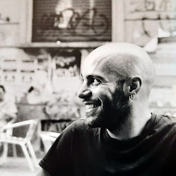

Research
My research focuses on Artificial Intelligence and Natural Language Processing (NLP). I am currently involved in the following projects:
- EFRA (Food Risk Analytics)
- ATRIUM (Digital Humanities)
- FAIR (Future AI Research)
Tech Stack

I am a PostDoc Researcher at the Data Integration and Data Preparation (D2IP) group within BIFOLD (Technische Universität Berlin), specializing in Information Integration and Data Cleansing. I hold a Ph.D. in AI for Society from the University of Pisa and ISTI-CNR, with a thesis on efficient methods for conversational search and summarization. My research interests include Large Language Models (LLMs), Conversational Search, Information Retrieval, Data Integration, and Text Summarization.
My research focuses on Artificial Intelligence and Natural Language Processing (NLP). I am currently involved in the following projects:
Efficient and Effective Methods for Conversational Search and Summarization (2025). Link to Thesis
Muntean, C. I., Nardini, F. M., Perego, R., Rocchietti, G., & Rulli, C. (2025). Efficient Conversational Search via Topical Locality in Dense Retrieval (short paper). In SIGIR '25. DOI:10.1145/3726302.3730186
Galimzhanova, E., Muntean, C. I., Nardini, F. M., Perego, R., & Rocchietti, G. (2023). Rewriting Conversational Utterances with Instructed Large Language Models. In 2023 IEEE/WIC International Conference on Web Intelligence and Intelligent Agent Technology (WI-IAT). DOI:10.1109/WI-IAT59888.2023.00014
Rocchietti, G., Frieder, O., Muntean, C. I., Nardini, F. M., & Perego, R. (2023). Commonsense Injection in Conversational Systems: An Adaptable Framework for Query Expansion. In 2023 IEEE/WIC International Conference on Web Intelligence and Intelligent Agent Technology (WI-IAT). DOI:10.1109/WI-IAT59888.2023.00013
Rocchietti, G., Achena, F., Marziano, G., Salaris, S., & Lenci, A. (2021). FANCY: A Diagnostic Data-Set for NLI Models. In Eighth Italian Conference on Computational Linguistics CliC-It 2021. DOI:10.4000/books.aaccademia.10804
Rocchietti, G., Pugliese, C., Rangel, G. S., & Carvalho, J. T. (2024). From Geolocated Images to Urban Region Identification and Description: a Large Language Model Approach (short paper). In Proceedings of the 32nd ACM International Conference on Advances in Geographic Information Systems, SIGSPATIAL '24. DOI:10.1145/3678717.3691317
Rocchietti, G., Rulli, C., Randl, K., Muntean, C. I., Nardini, F. M., Perego, R., Trani, S., Karvounis, M., & Janostik, J. (2024). LongDoc Summarization using Instruction-tuned Large Language Models for Food Safety Regulations. In IIR2024: 14th Italian Information Retrieval Workshop.
Rocchietti, G., Rulli, C., Nardini, F. M., Muntean, C. I., Perego, R., & Frieder, O. (2025). ChatGPT Versus Modest Large Language Models: An Extensive Study on Benefits and Drawbacks for Conversational Search. IEEE Access, 13. DOI:10.1109/ACCESS.2025.3529741
Rocchietti, G., Muntean, C. I., & Nardini, F. M. (2024). Enhancing Conversational Search with Large Language Models. ERCIM News, 136.
You can reach me via email at guido.rocchietti@tu-berlin.de or guido.rocchietti@gmail.com.
You can also find me on: